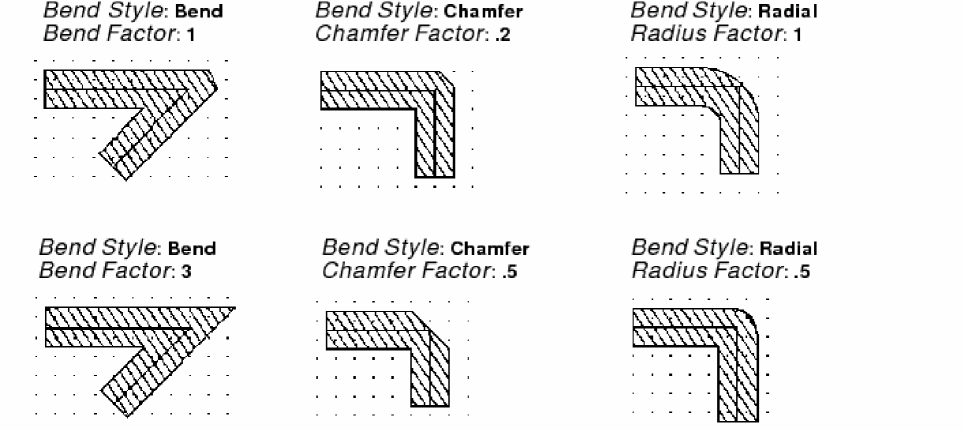

Creating Advanced Transmission Lines
The Bend Style option lets you customize the corners of your transmission lines into standard bends, chamfers, and radial corners.
To create an advanced transmission line:
- In the layout window, from Create – Microwave, choose trl or Bend.
-
Press
F3to open the Transmission Line Bend form or the Transmission Line form, depending on the command you chose. - Choose a style from Bend Style. You can choose bend, chamfer or radial.
-
Type the corresponding factor to use, as shown in the following image.
 - On the canvas, click each of the three points of the bend.
Related Topics
Return to top